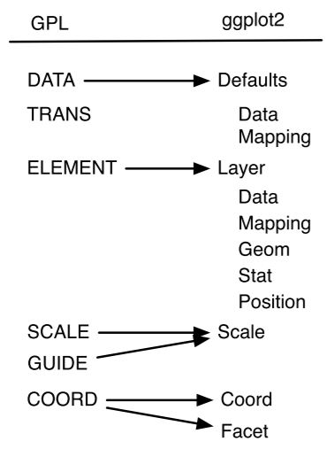
22 Charts with ggplot2
An auditor often receives data with thousands of rows. Think of the bill register of a State scheme run in twelve districts, for a whole financial year. Somewhere in it, a district may have rushed its spending into March to avoid a lapse of funds. Another may have split its purchases into bills just below the limit of its financial powers. A third may have spent more than its budget. Each of these is hard to see in a table. Each is plain to see in a good chart.
Charts help the auditor twice. First, while analysing, a chart shows patterns, outliers and gaps that a summary table hides. Second, while reporting, a clear chart tells the reader in a few seconds what a paragraph of numbers cannot.
In Chapter 21 we drew charts with base R. In this chapter we learn ggplot2, the most widely used charting package in R. We will build every chart on a simulated bill register of a scheme, with a few irregularities planted in it. Step by step, we will learn
- the idea of the grammar of graphics, on which ggplot2 is built;
- how to map columns of the data to the look of a chart, through aesthetics;
- the common chart types, called geoms, such as bars, histograms, lines and box plots.
On the way, the charts will point us to the planted cases. At the end, an audit use case puts a number on one of them. In Chapter 23 we then learn to make these charts fit for an audit report, with scales, coordinate systems, facets, labels, themes and saving.
22.1 Core concepts of grammar of graphics
ggplot212 was developed by Hadley Wickham. It is based on the ideas of Leland Wilkinson in his book The Grammar of Graphics (2005).3 The grammar of graphics is a framework that describes a chart as a set of layers. Each layer does one job, and the layers together make the chart. Even the letters gg in ggplot2 stand for grammar of graphics.
Hadley Wickham explained his idea of a layered grammar in a paper titled A Layered Grammar of Graphics4 (2010).5 In the same paper, he put forward ggplot2 as an open source way of building such charts. Readers who want the theory in detail may read the paper. Over the next decade, the package grew6 into one of the most used packages in R.
Figure 22.17 shows how the parts of the two grammars relate. The parts on the left were put forward by Wilkinson. Those on the right were proposed by Wickham. TRANS has no match in ggplot2, because R itself does that job.
So, to build a chart from data, we use seven main components.
-
Data. Every chart starts with data. It is also the first argument of the most important function in the package,
ggplot(data = ). -
Aesthetics. The function
aes()gives a mapping from the columns of the data to the parts of the chart. For example, one column may go on thexaxis, another on theyaxis, and a third may decide the colour. -
Geometries. The
geom_*()functions, or geoms, decide the shape the data takes on the chart. They decide, for example, whether each row is drawn as a point, a bar or a line. - Statistics. A stat computes something from the data before drawing it, such as a count, a mean or a trend line.
- Scales. A scale controls how values become positions, colours or sizes. For example, an axis may be shown on a logarithmic scale, or amounts may be shown in lakh.
-
Coordinate system. Most charts use the usual Cartesian system of
xandy. A pie chart uses a polar system, and a map uses a map projection. - Facets. A facet splits one chart into small panels, one for each group in the data.
Of these, the first three (data, aesthetics and geometries) must be given by us. The others are not less important. It is just that they have sensible defaults. For example, the default coordinate system is Cartesian. Let us start with the three essential components and build a chart with them.
22.2 Our data, a bill register of a scheme
We need data first. Let us create the bill register of an imaginary State scheme for the financial year 2024-25. The scheme runs in 12 districts, grouped into four divisions. Each bill belongs to one of four categories, which are Works, Supplies, Services and Vehicle hire. The West division hires no vehicles, as it has its own.
The rules of our scheme are simple. A district officer may pass a bill of up to ₹2 lakh. A bill above ₹2 lakh needs the sanction of a higher authority. Bills are normally paid after a few days of checking.
We have planted four irregularities in the data. We will not list them here. The charts in this chapter and in Chapter 23 will bring them out one by one. The code that creates the data is folded below. You may expand it once you are comfortable with dplyr.
Code to create the bill register, the monthly expenditure and the budget
set.seed(2025)
district_list <- tibble(
district = c("Amarpur", "Belapur", "Chandpur", "Devgarh", "Fatehpur", "Gopalganj",
"Haripur", "Kishanpur", "Lalganj", "Madhopur", "Narsinghpur", "Rampur"),
division = rep(c("North", "South", "East", "West"), each = 3),
size = round(runif(12, 0.6, 1.5), 2) # bigger districts have more bills
)
fy_months <- seq(as.Date("2024-04-01"), by = "month", length.out = 12)
categories <- tibble(
category = c("Works", "Supplies", "Services", "Vehicle hire"),
lambda = c(3, 4, 3, 2), # bills per month in a district
median = c(300000, 110000, 70000, 35000) # typical bill amount
)
vendors <- list(
"Works" = c("Narmada Builders", "Shakti Constructions", "Jai Hind Infra",
"Pawan Contractors"),
"Supplies" = c("Bharat Stationers", "Kaveri Suppliers", "Om Sai Traders",
"Patel Hardware"),
"Services" = c("National Printers", "Rajdhani Computers", "Sagar Caterers"),
"Vehicle hire" = c("Shree Ganesh Transport", "Annapurna Travels")
)
# Number of bills for each district, month and category
cells <- expand_grid(district_list, month_start = fy_months, categories) |>
# Planted case 1. March rush in Fatehpur and Rampur
mutate(rush = district %in% c("Fatehpur", "Rampur") &
month_start == as.Date("2025-03-01"),
lambda = if_else(division == "West" & category == "Vehicle hire", 0, lambda),
n = rpois(n(), lambda * size * if_else(rush, 2, 1)))
bills <- cells |>
uncount(n) |>
mutate(
bill_date = month_start + sample(0:27, n(), replace = TRUE),
amount = round(rlnorm(n(), log(median), 0.55) * if_else(rush, 2.5, 1), -1),
vendor = map_chr(category, \(k) sample(vendors[[k]], 1)),
days_to_pay = 3 + rnbinom(n(), mu = 15, size = 3)
)
# Planted case 2. Supplies split into bills just below Rs 2 lakh in Devgarh
split_bills <- tibble(
district = "Devgarh", division = "South", category = "Supplies",
vendor = "Shubham Enterprises",
bill_date = as.Date("2024-06-03") + sort(sample(0:270, 28)),
amount = round(runif(28, 190000, 199900), -1),
days_to_pay = 3 + rnbinom(28, mu = 15, size = 3)
)
# Planted case 3. Large works bills paid within a day in Lalganj
fast_bills <- tibble(
district = "Lalganj", division = "East", category = "Works",
vendor = "Vikas Constructions",
bill_date = as.Date("2024-08-05") + sort(sample(0:200, 6)),
amount = round(runif(6, 650000, 900000), -1),
days_to_pay = c(0, 1, 0, 1, 1, 0)
)
bills <- bind_rows(bills, split_bills, fast_bills) |>
mutate(month_start = floor_date(bill_date, "month"),
month = factor(format(month_start, "%b"), levels = format(fy_months, "%b")),
quarter = (as.integer(month) - 1) %/% 3 + 1) |>
arrange(bill_date) |>
mutate(bill_no = sprintf("B-%04d", row_number())) |>
select(bill_no, district, division, category, vendor, bill_date, month_start,
month, quarter, amount, days_to_pay)
# Monthly expenditure statement, built from the bills
spend <- bills |>
summarise(vouchers = n(), exp = sum(amount),
.by = c(district, division, month_start, month, category)) |>
arrange(district, month, category)
# Budget estimate of each district for the year
budget <- spend |>
summarise(amt_exp = sum(exp), .by = district) |>
mutate(util = runif(12, 0.6, 0.98),
# Planted case 4. Devgarh and Lalganj spent more than their budget
util = replace(util, district %in% c("Devgarh", "Lalganj"), c(1.18, 1.27)),
amt_be = round(amt_exp / util, -5)) |>
select(district, amt_be)
# Small helpers for amounts in prose
lakh <- function(x) round(x / 1e5, 1)
crore <- function(x) round(x / 1e7, 2)We now have three tables. Let us look at each.
glimpse(bills)Rows: 1,952
Columns: 11
$ bill_no <chr> "B-0001", "B-0002", "B-0003", "B-0004", "B-0005", "B-0006"…
$ district <chr> "Amarpur", "Belapur", "Chandpur", "Chandpur", "Devgarh", "…
$ division <chr> "North", "North", "North", "North", "South", "South", "Eas…
$ category <chr> "Services", "Services", "Works", "Supplies", "Vehicle hire…
$ vendor <chr> "National Printers", "National Printers", "Shakti Construc…
$ bill_date <date> 2024-04-01, 2024-04-01, 2024-04-01, 2024-04-01, 2024-04-0…
$ month_start <date> 2024-04-01, 2024-04-01, 2024-04-01, 2024-04-01, 2024-04-0…
$ month <fct> Apr, Apr, Apr, Apr, Apr, Apr, Apr, Apr, Apr, Apr, Apr, Apr…
$ quarter <dbl> 1, 1, 1, 1, 1, 1, 1, 1, 1, 1, 1, 1, 1, 1, 1, 1, 1, 1, 1, 1…
$ amount <dbl> 69100, 87070, 177210, 45040, 34110, 100030, 376030, 587090…
$ days_to_pay <dbl> 19, 15, 23, 16, 34, 12, 15, 8, 17, 20, 15, 17, 13, 23, 16,…bills is the bill register. It has 1952 bills worth ₹32.47 crore. The columns are these.
-
bill_nois the number given to the bill, andbill_dateis its date. -
districtanddivisiontell us where the money was spent. -
categoryis the kind of expenditure, andvendoris the firm paid. -
month_startis the first day of the month of the bill.monthis the same month as a factor, in the order of the financial year, from April to March.quarteris the quarter of the financial year, from 1 to 4. -
amountis the amount of the bill, in rupees. -
days_to_payis the number of days between the bill and its payment.
spend# A tibble: 518 × 7
district division month_start month category vouchers exp
<chr> <chr> <date> <fct> <chr> <int> <dbl>
1 Amarpur North 2024-04-01 Apr Services 3 269260
2 Amarpur North 2024-04-01 Apr Supplies 1 133500
3 Amarpur North 2024-04-01 Apr Vehicle hire 4 159030
4 Amarpur North 2024-04-01 Apr Works 4 970700
5 Amarpur North 2024-05-01 May Services 5 442020
6 Amarpur North 2024-05-01 May Supplies 4 292240
7 Amarpur North 2024-05-01 May Vehicle hire 1 16460
8 Amarpur North 2024-05-01 May Works 3 1207280
9 Amarpur North 2024-06-01 Jun Services 1 69010
10 Amarpur North 2024-06-01 Jun Supplies 7 1391710
# ℹ 508 more rowsspend is the monthly expenditure statement. It has one row for each district, month and category, with the number of vouchers and the expenditure. It is built from the bills, as a district would report it to the head office.
budget# A tibble: 12 × 2
district amt_be
<chr> <dbl>
1 Amarpur 32600000
2 Belapur 27200000
3 Chandpur 28100000
4 Devgarh 21100000
5 Fatehpur 42900000
6 Gopalganj 25000000
7 Haripur 55100000
8 Kishanpur 22000000
9 Lalganj 21100000
10 Madhopur 31000000
11 Narsinghpur 27600000
12 Rampur 46700000budget gives the budget estimate (BE) of each district for the year, in rupees.
22.3 Building a basic plot using key components
Let us see what happens when only the data is given to the ggplot() function. The package ggplot2 is loaded with tidyverse.
ggplot(data = bills)In Figure 22.2 we see only a blank grey space. The data is now attached to the chart, but ggplot2 does not yet know what to draw. Let us give it the aesthetic mappings, with the function aes(), through the argument mapping of ggplot().
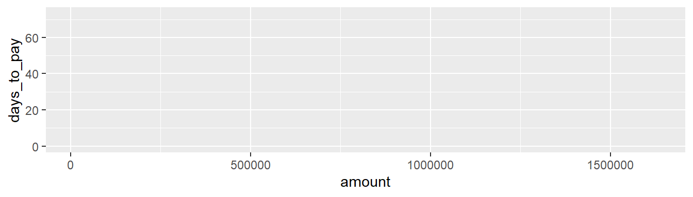
In Figure 22.3 the two columns amount and days_to_pay have been mapped to the x and y axes. Each axis now has a range and a title. But there is still no geometry, so the plot area is empty. Let us draw each bill as a point. To do this, we use the family of functions geom_*(), here geom_point().
ggplot(data = bills, mapping = aes(x = amount, y = days_to_pay)) +
geom_point()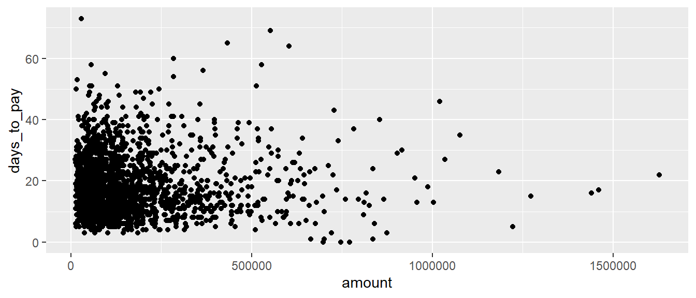
In Figure 22.4 each bill is now a point. The new layer, geom_point(), was added to the earlier code with a + sign. This chart shows how long each bill took to be paid, against its amount. Most bills, small or large, were paid within about five weeks. The axis of amounts shows full rupees. We will learn to show them in lakh in Chapter 23.
We could also show the amounts as a box plot, by using another geometry, geom_boxplot(). See Figure 22.5.
ggplot(data = bills, mapping = aes(y = amount)) +
geom_boxplot()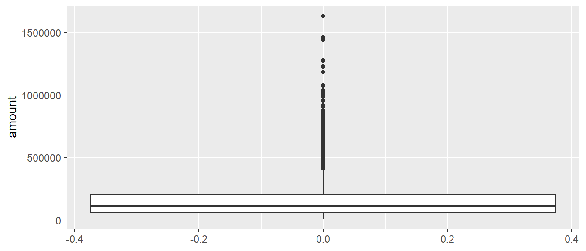
This is the basic way of building a chart in ggplot2. We give data and aesthetics to ggplot(). We then add a geom_*() function with a plus sign +.
Notice also that data and mapping are the first two arguments of ggplot(). Similarly, x and y are the first two arguments of aes(). So we may draw the chart in Figure 22.4 without naming these arguments. We will follow this shorter style from now on.
ggplot(bills, aes(amount, days_to_pay)) +
geom_point()Let us now learn more about aesthetics and geometries, before moving to the other components.
22.4 Other aesthetic attributes (colour, shape, size and others)
So far, we have mapped columns of the data to positions, that is, to x and y. We can also map columns to other aesthetic attributes, like shape, size, colour and alpha (transparency). Figure 22.6 shows some of them.
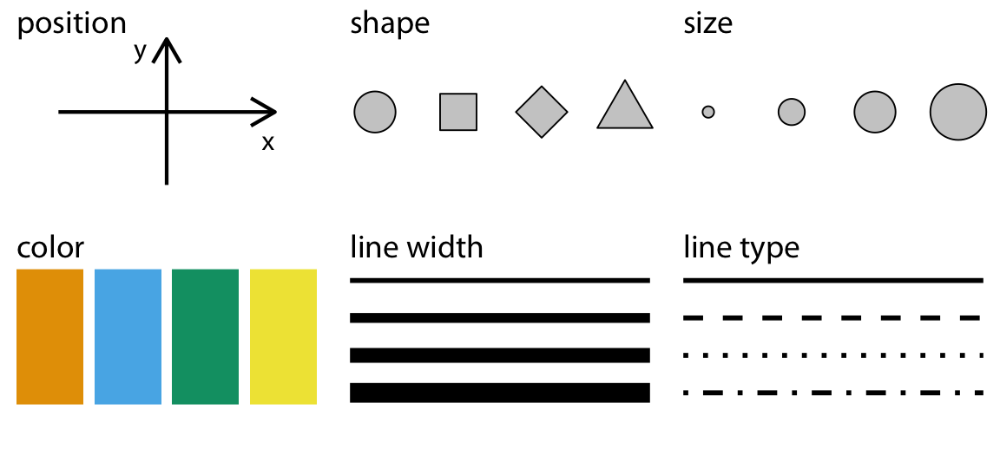
These aesthetics fall into two broad groups.
- Aesthetics that can show a
continuousvariable, like an amount. - Aesthetics that can show only a
discrete(categorical) variable, like a district.
For example, position, size, colour and linewidth can show continuous data. But shape and linetype can show only discrete data. A numeric column is always treated as continuous by ggplot2. Some numeric columns are really codes, like a quarter number or a district code. Such a column must be converted to a discrete type, usually a factor, before mapping it to a discrete aesthetic. We will see an example shortly.
Some commonly used aesthetics are these.
-
shapeis the symbol of a point drawn bygeom_point(), such as a dot, a triangle or a square. -
fillis the colour inside a shape, such as a bar or a box. -
colouris the colour of the outline of a bar or a box, or the colour of a point drawn bygeom_point(). -
sizeis the size of points and text. -
linewidthis the thickness of lines and borders. Before ggplot2 version 3.4,sizewas used for this too. -
alphais the transparency, from1(solid) to0(invisible). -
widthis the width of the bars in a bar chart. -
linetypeis the type of a line, such as solid, dashed or dotted.
Some settings, like binwidth, the width of the bins of a histogram, are not aesthetics. They are arguments of a particular geom. We will meet them with their geoms.
22.4.1 Colour, the most important aesthetic
We may colour the elements of a chart with the aesthetic colour. The American spelling color works in exactly the same way. Colour is used in a chart mainly for three purposes.
- To highlight some values, or all of them.
- To group the data points, so that the groups can be told apart.
- To show the value of a variable.
Let us first colour all the points of Figure 22.4 red. To do this, we give a fixed value of colour directly inside the geom_*() function (Figure 22.7).
ggplot(bills, aes(amount, days_to_pay)) +
geom_point(colour = "red")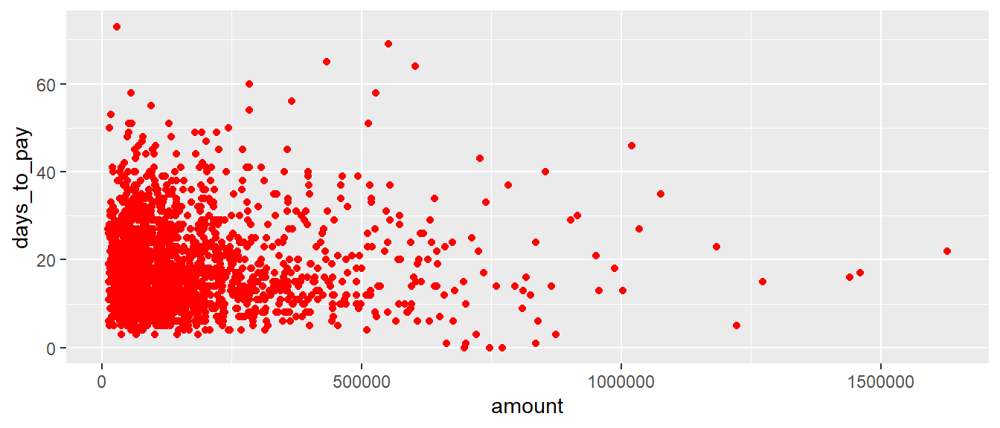
The argument colour = "red" was given inside geom_point(), outside aes(). So every point turned red. But to colour the points according to the data, we must put colour inside aes(). In other words, we must use colour as an aesthetic mapping.
So let us colour the points by the column quarter, the quarter of the financial year in which the bill was raised.
ggplot(bills, aes(amount, days_to_pay)) +
geom_point(aes(colour = quarter))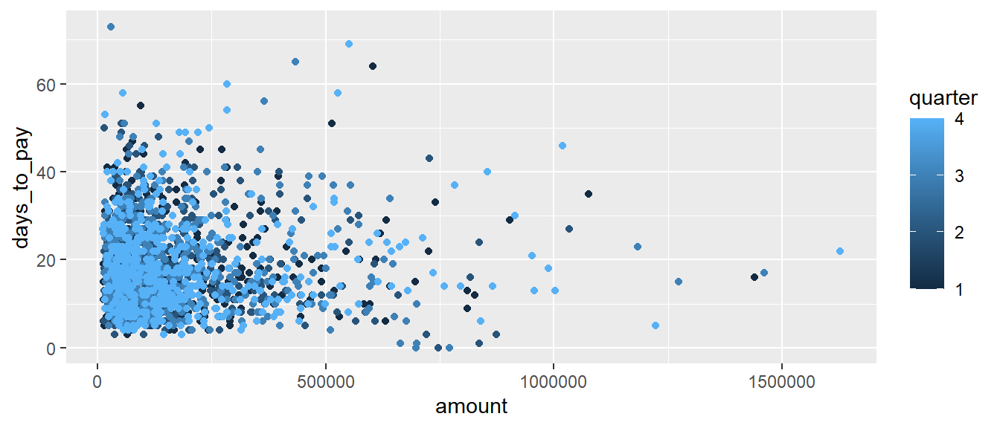
In Figure 22.8 the points are coloured by quarter, and a colour bar appears as a legend. But the colour bar runs smoothly from 1 to 4, as if a quarter of 2.5 could exist. This happened because quarter is a numeric column, so ggplot2 treated it as continuous. The chart is more meaningful if we treat the quarter as a category. So let us convert it to a factor, on the fly.
ggplot(bills, aes(amount, days_to_pay)) +
geom_point(aes(colour = as.factor(quarter)))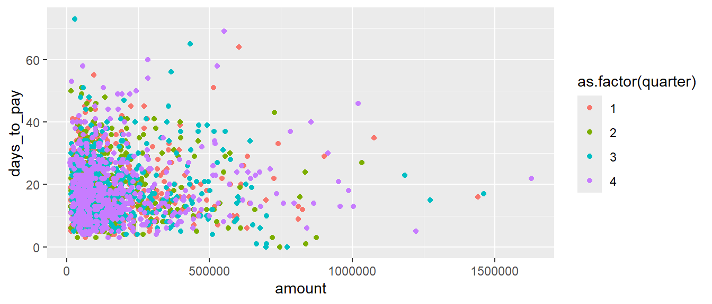
In Figure 22.9 each quarter now has its own colour, and the legend shows four separate keys. Here, the colour aesthetic was given through aes() inside geom_point(). It could also have been given inside ggplot(). The following code produces exactly the same chart.
ggplot(bills, aes(amount, days_to_pay, colour = as.factor(quarter))) +
geom_point()Is there any difference between the two? Yes. A value given inside a geom overrides the one given in ggplot(). To see this, look at the result of the following code in Figure 22.10. The mapping in ggplot() asked for colours by quarter. But the fixed colour in geom_point() won, and all the points are red.
ggplot(bills, aes(amount, days_to_pay, colour = as.factor(quarter))) +
geom_point(colour = "red")
The third use of colour is to show the value of a variable directly. Let us see the expenditure of each district in each month. A good chart for this is a heat-map, sometimes called a highlight table. We first summarise the monthly statement by district and month. The functions summarise() and .by are explained in Chapter 13.
To draw the boxes of the heat-map we use another geometry, geom_tile(). We map the month to x and the district to y. To colour each box by the expenditure, we use the fill aesthetic instead of colour. We will see the difference between the two shortly. We divide the expenditure by 1e5 to show it in lakh.
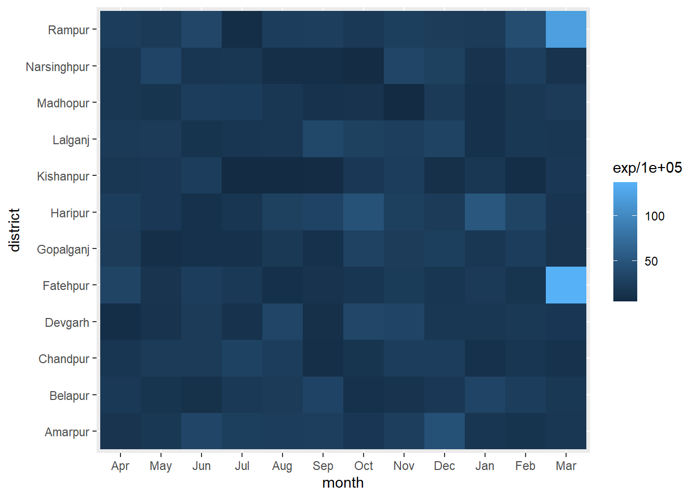
In Figure 22.11 almost every box is a similar dark blue. Two boxes stand out in light blue. Both are in March, one for Fatehpur and one for Rampur. These two districts spent far more in March than in any other month. This is our first planted case, a March rush.
TipAudit tip
Heavy spending in the last month of the financial year is a classic audit concern. Funds that would otherwise lapse may be spent in a hurry, sometimes on things not needed, or booked without the work being done. A heat-map of districts against months shows such a rush at a glance. For the districts that stand out, examine the March bills for the date of supply, the date of work and the stock entries.
So far, we have seen that to map colour to a variable, we pass it inside aes(). To use a fixed colour, we pass it outside aes(), directly in the geom. ggplot2 knows most colour names, and Appendix D discusses colours in detail. But what if we pass a fixed colour inside aes()? Let us check.
ggplot(bills, aes(amount, days_to_pay)) +
geom_point(aes(colour = "blue"))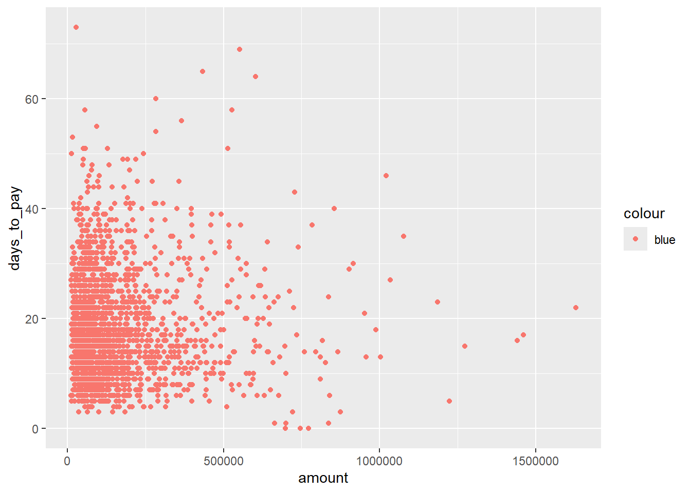
Interesting! The points are not blue, and a legend has appeared with the single key “blue”. What happened is this. Inside aes(), ggplot2 treats "blue" as data, not as a colour. It creates a new column on the fly, with the value "blue" in every row. It then maps that column to colour with its default palette, and draws a legend for it. So a fixed colour must always be given outside aes().
22.4.2 Colour vs. fill
We used the colour aesthetic with points (Figure 22.9) and the fill aesthetic with tiles (Figure 22.11). Why two different aesthetics? Usually, colour changes the outline of a shape and fill changes the inside. Points seem to be an exception, as we used colour for them. In fact they are not. The default shape of geom_point() is shape = 19, a solid circle, which has no separate inside.
We can see the difference if we use shape = 21 instead. This is a circle that takes both a fill for the inside and a colour for the outline (Figure 22.13).
# From here on, all plots in this chapter use theme_bw()
theme_set(theme_bw())
ggplot(bills, aes(amount, days_to_pay)) +
geom_point(aes(colour = as.factor(quarter)), shape = 21, size = 4) +
ggtitle("Using colour aesthetic")
ggplot(bills, aes(amount, days_to_pay)) +
geom_point(aes(fill = as.factor(quarter)), shape = 21, size = 4) +
ggtitle("Using fill aesthetic")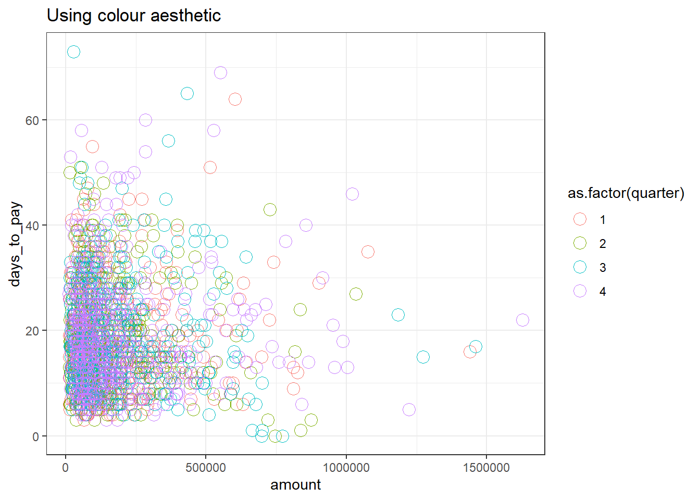
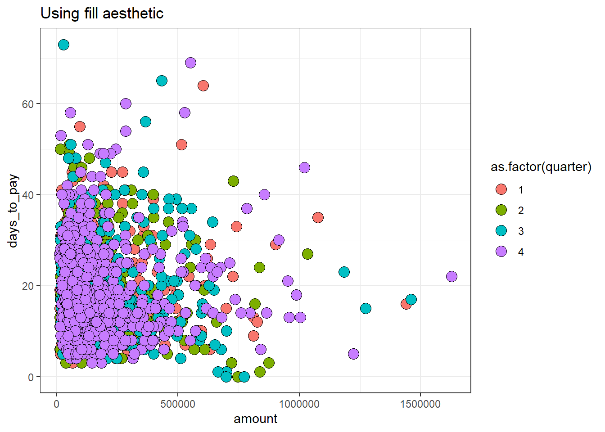
Notice the first line of the code. theme_set(theme_bw()) gives all later charts a white background. We will learn about themes in Chapter 23.
22.4.3 Transparency through alpha
One more aesthetic changes how colours look. alpha controls transparency. Its value runs from 0 (completely transparent) to 1 (fully solid). It is very useful when many points overlap. Our register has 1952 bills, and in Figure 22.4 the small bills form a solid black mass. With a low alpha, a single point looks faint, but places where many points overlap look dark. So we can see where the bills are crowded.
ggplot(bills, aes(x = amount, y = days_to_pay)) +
geom_point(alpha = 0.2, size = 3)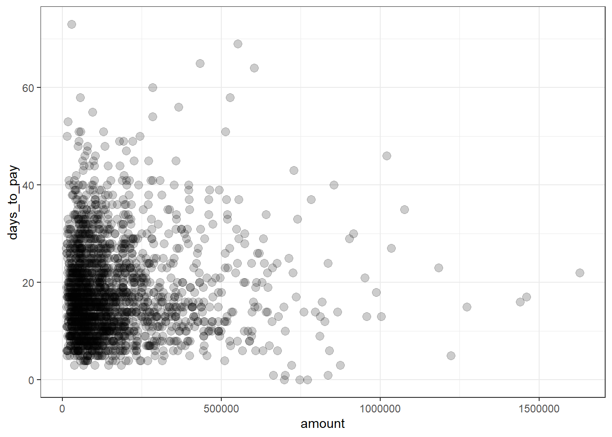
In Figure 22.14 the darkest area is in the lower left. Most bills are small, and were paid in one to five weeks. Here we gave alpha a fixed value. Like any other aesthetic, alpha can also be mapped to a continuous column inside aes(), for example aes(alpha = days_to_pay).
22.4.4 Shape aesthetic
In Figure 22.13 we already changed the shape of the points, from a solid circle to a circle with an outline. The shape aesthetic gives different symbols to different groups of points. As discussed, it should be mapped to a discrete variable. ggplot2 offers many shapes, such as circles, triangles and squares, each known by a number (see ?points).
Shapes work well for a few groups. With many groups, the shapes become hard to tell apart. Let us map the category of the bill to shape. It is already a character column, so no conversion is needed.
ggplot(bills, aes(amount, days_to_pay)) +
geom_point(aes(shape = category), size = 2)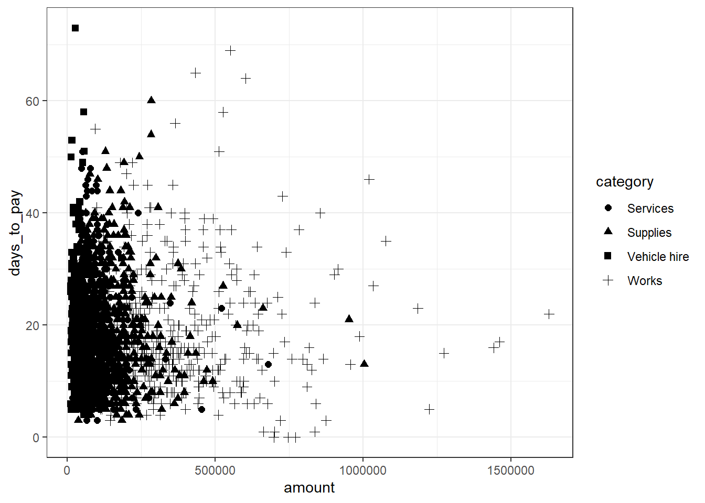
In Figure 22.15 each of the four categories has its own symbol.
A few shapes available in the shape aesthetic are given in Figure 22.16. The fill aesthetic is shown in orange and the colour aesthetic in blue.
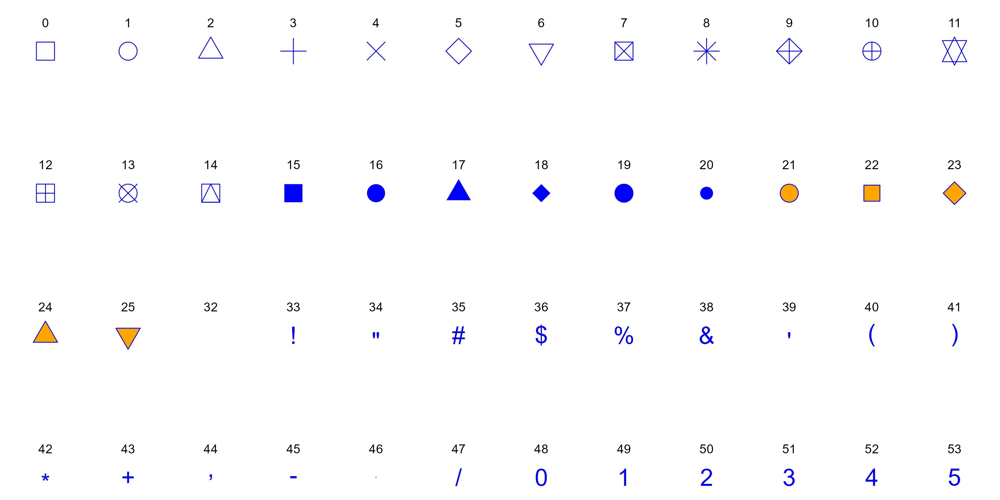
22.4.5 Size aesthetic
The size aesthetic controls the size of elements, such as points. By mapping a column to size, we can show one more dimension of the data.
Let us summarise the bills by district. For each district, we find the number of bills, the average days taken to pay, and the total amount. We then plot the number of bills against the average days, with the size of each point showing the total amount. Such a chart is often called a bubble chart.
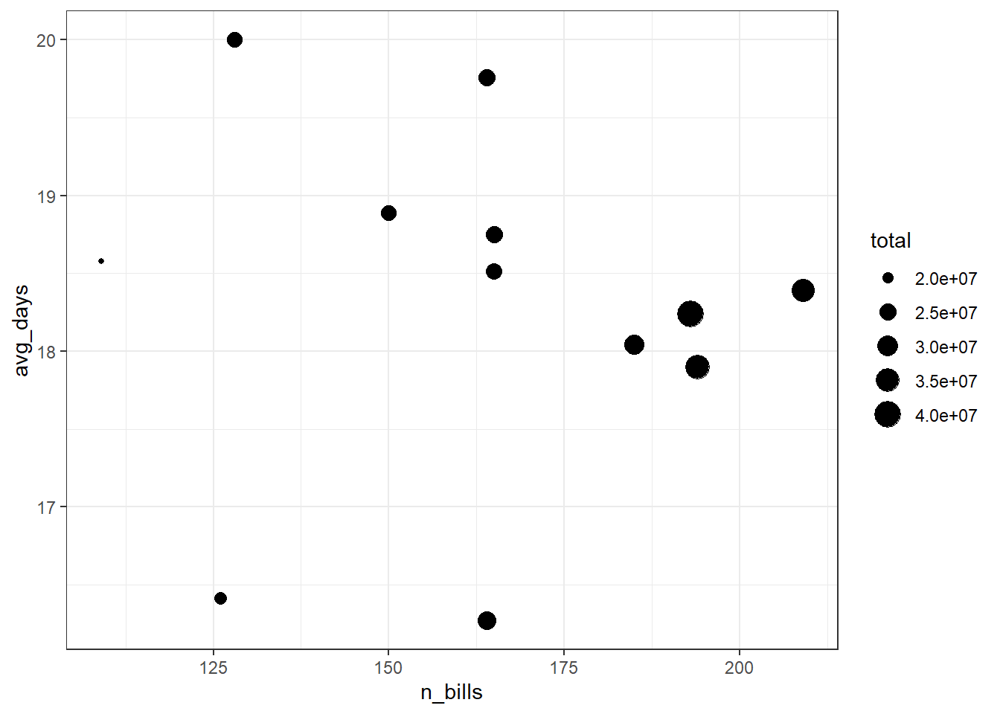
In Figure 22.17 the bigger bubbles are the districts that spent more. The size adds a third variable to a two-dimensional chart. But we should use size with care. People judge sizes poorly, and very large or very small points make a chart hard to read.
22.4.6 Using multiple aesthetics simultaneously
Several aesthetics can be mapped at the same time. See this example.
ggplot(bills,
aes(
x = amount,
y = days_to_pay,
shape = category,
colour = as.factor(quarter),
size = amount
)) +
geom_point(alpha = 0.5)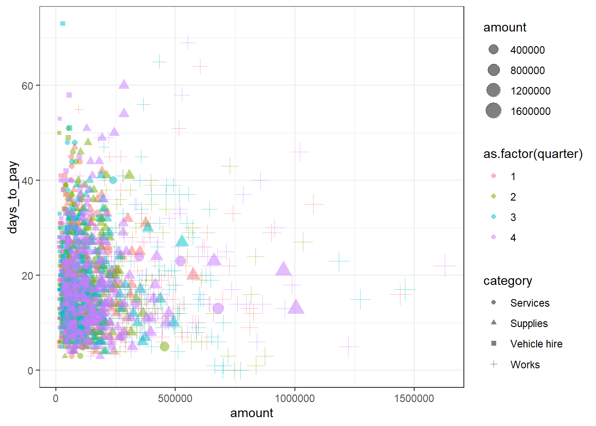
Figure 22.18 shows five variables at once. But it is hard to read. Just because we can map many aesthetics does not mean we should. A chart for an audit report should usually make one point, with one or two aesthetics.
We will meet other aesthetics like linetype and width in Section 22.5, along with the geoms that use them.
22.5 More on geoms
In the last section, we saw that the chart appeared as soon as we added a geom_*() layer. In the background, a geom_*() function is a shortcut. It adds one layer that has three parts, a stat, a geom and a position. So ggplot(bills, aes(amount, days_to_pay)) + geom_point() is the same as the following code.

We will rarely write layer() ourselves. But knowing that each geom has a stat and a position explains much of what follows. Some common geoms are listed below.
- Histograms, with
geom_histogram(). - Bar charts, with
geom_bar()orgeom_col(). - Box plots, with
geom_boxplot(). - Points, as in scatter plots, with
geom_point(). - Line charts, with
geom_line()orgeom_path(). - Trend lines, with
geom_smooth(). - Heat-maps, with
geom_tile(). - Text labels, with
geom_text()andgeom_label().
We have already used geom_point(), geom_boxplot() and geom_tile(). Let us look at the others in some detail.
22.5.1 Univariate bar charts through geom_bar()
Bar charts are the simplest charts. But they can mislead us if we do not understand how the bars are built. Bar charts can show one variable (univariate) or two (bivariate). With colour, they can show even more.
The simplest bar chart shows how many rows fall in each category of a variable. For example, how many bills were raised in each quarter?
Figure 22.20 shows the number of bills in each quarter. As quarter is numeric, the x axis has a numeric scale. Notice also that our data was not summarised. ggplot2 counted the rows for each value of quarter by itself. The title of the y axis, count, confirms this.
Readers may run the following code to see the x axis change when the quarter is converted to a factor.
ggplot(bills, aes(as.factor(quarter))) +
geom_bar()Here, geom_bar() counted the rows. Sometimes we need another summary. To do that, we must understand what happens behind the code. In fact, aes(quarter) is a shortcut for aes(x = quarter, y = after_stat(count)). Here, count is a special variable, computed by the stat of the geom. It holds the number of rows in each category. The function after_stat() tells ggplot2 to use a value computed after the stat has done its work.
So let us show the proportion of bills in each category, instead of the count.
ggplot(bills, aes(category, y = after_stat(count / sum(count)))) +
geom_bar()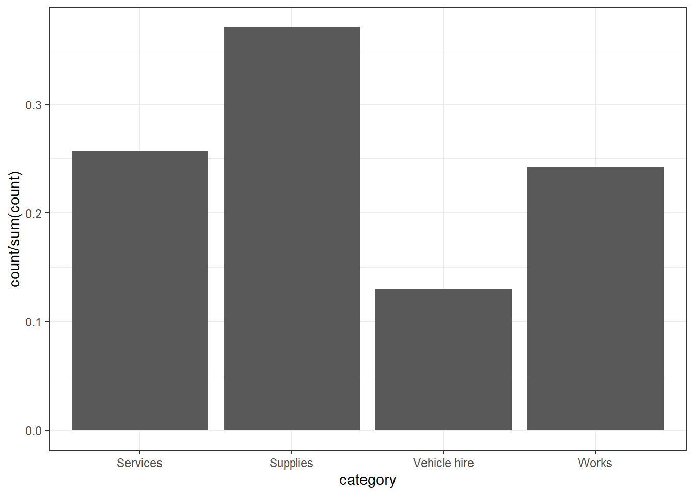
In Figure 22.21 the y axis now shows proportions. Supplies have the largest share of the bills.
22.5.2 Bivariate bar charts through geom_bar()
geom_bar() summarises raw, row-level data and draws the bars. So far it has only counted rows. But often we need a summary of another column. For example, what is the average amount of a bill in each category?
To do this, we use the argument stat of geom_bar(), with the special value "summary_bin". With it, we give the argument fun, the summary function, which is mean in our case. (stat = "summary" works the same way for a discrete x.)
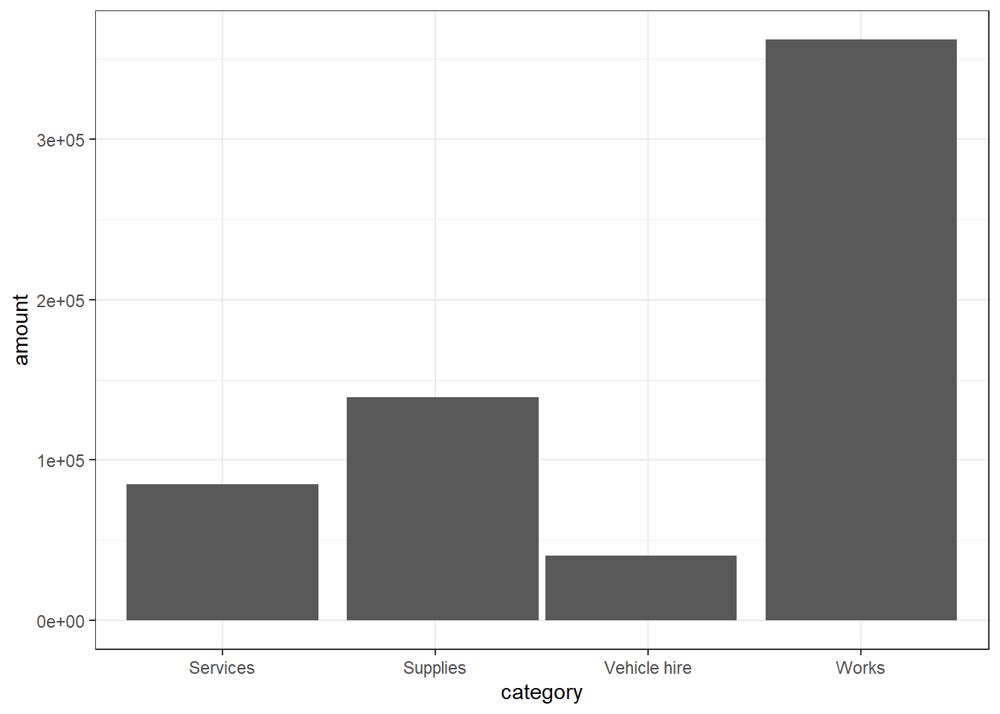
In Figure 22.22 we see that works bills have by far the highest average amount, as we would expect.
So far, we have drawn bars from raw data. We can also draw bars from data that we have already summarised. The trick is to use stat = "identity" in geom_bar(). Let us find the average bill amount of each district ourselves, and then plot it. For a change, let us put the districts on the y axis. Long names are easier to read this way.

Figure 22.23 shows the chart we wanted. Readers may try the code without stat = "identity" to see what happens.
Now, as promised, let us see what the stat argument does. With stat = "summary_bin", ggplot2 computed a summary of raw data, using fun. With stat = "identity", ggplot2 draws the values as they are. It assumes the data is already summarised, with only one value of y for each x. There are other stat values too. But summaries inside ggplot2 soon become tricky. It is better to summarise the data ourselves and draw the bars with geom_col(), which we discuss shortly.
22.5.3 Stacked bar charts through geom_bar()
In Section 22.4, we learnt to show more variables in a chart with aesthetics like colour and size. In a bar chart, the length of the bar already shows one variable. The best aesthetic for another variable is fill or colour.
Let us count the bills in each division again. But let us map fill to the category of the bill.
In Figure 22.24 we got what we wanted, simply by mapping fill. This works because of the default value of the position argument of geom_bar(), which is "stack". Bars at the same x position are stacked on top of one another by position_stack().
position_stack() has a useful argument reverse, which reverses the order of the stacked pieces. This helps, for example, when the chart is drawn along the y axis. The order of the pieces then matches the order of the legend.
ggplot(bills, aes(y = division, fill = category)) +
geom_bar(position = position_stack(reverse = TRUE)) +
theme(legend.position = "top")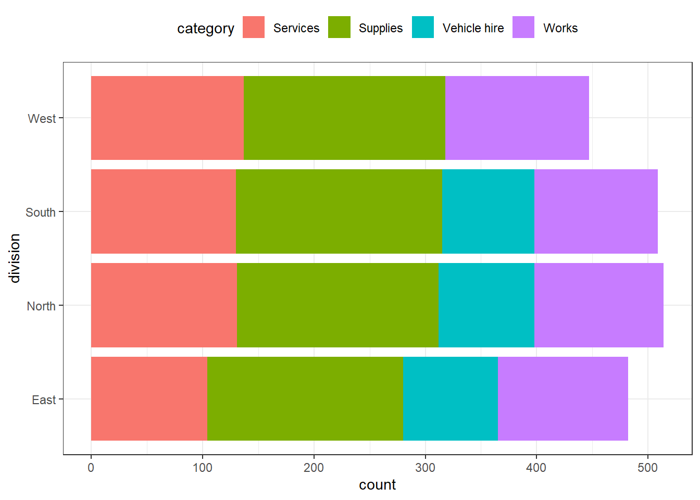
In Figure 22.25 the pieces of the bars now follow the order of the legend.
To place the bars side by side, we use another position function, position_dodge(). Let us redraw the same chart with the bars side by side.
ggplot(bills, aes(x = division, fill = category)) +
geom_bar(position = position_dodge()) +
theme(legend.position = "top")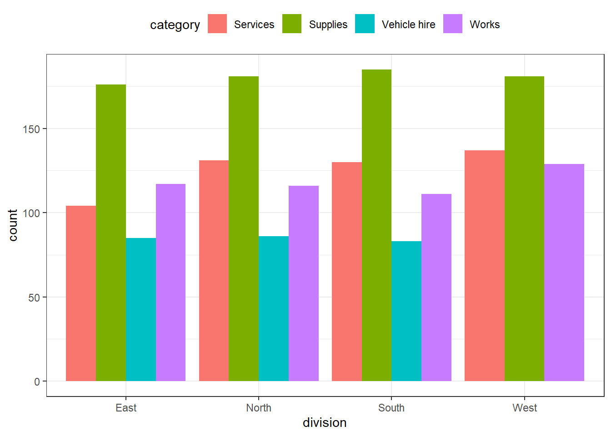
In Figure 22.26 there is now a separate bar for each category. Look at the West division. It has no vehicle hire bills, so it has only three bars. These three bars are wider than the others, because by default they share the full width of the division. This is due to the argument preserve of position_dodge(), whose default is "total". If we want all bars to have the same width, we set it to "single". See Figure 22.27.
ggplot(bills, aes(x = division, fill = category)) +
geom_bar(position = position_dodge(preserve = "single")) +
theme(legend.position = "top")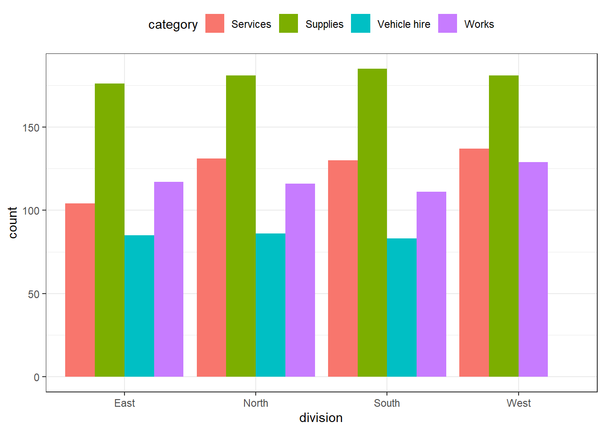
A related function, position_dodge2(), often works better for bar charts. It lets us set the padding between the bars. See Figure 22.28.
ggplot(bills, aes(x = division, fill = category)) +
geom_bar(position = position_dodge2(preserve = "single", padding = 0.2)) +
theme(legend.position = "top")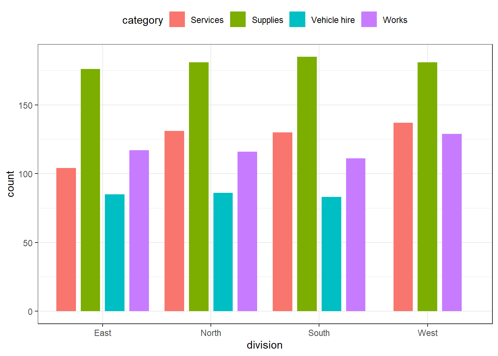
Finally, position_fill() stacks the bars and stretches every stack to the same height. Each bar then shows the share of each category, which is handy when the totals differ a lot. See Figure 22.29.
ggplot(bills, aes(x = division, fill = category)) +
geom_bar(position = position_fill()) +
theme(legend.position = "top")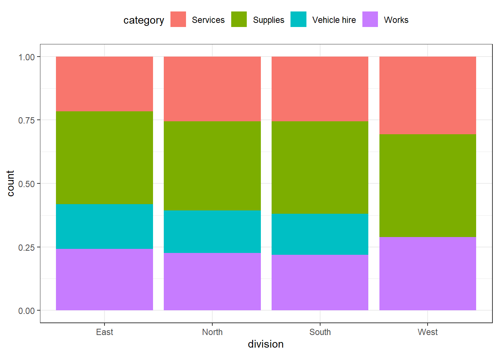
22.5.4 Bar charts through geom_col()
As we saw, summaries inside ggplot2 soon become tricky. So it is better to summarise the data ourselves, and draw the bars with geom_col(). The difference between the two is this. geom_bar() uses stat = "count" by default, that is, it counts the rows at each x position. geom_col() uses stat = "identity" by default, that is, it draws the values as they are. So to draw Figure 22.23 with geom_col(), we do not need the stat argument at all (Figure 22.30).
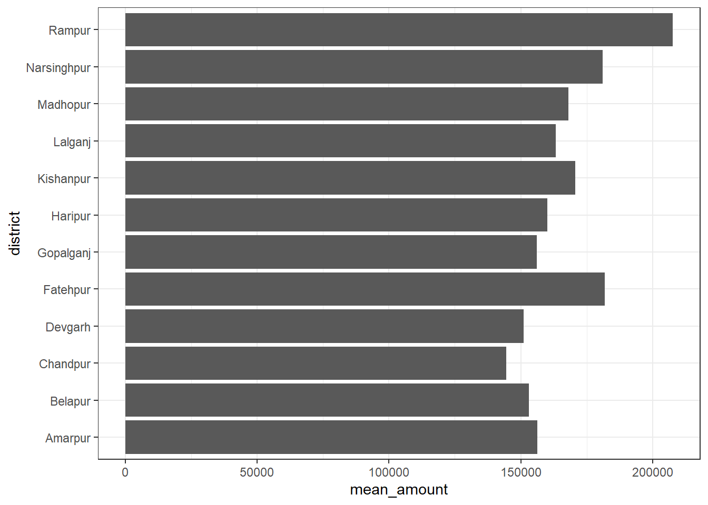
Once we understand the position and stat arguments of geom_bar(), it is easy to draw stacked, dodged and 100 percent stacked bars with geom_col(). Readers may try these on summarised data. Remember that geom_col() uses stat = "identity", so it does not summarise anything itself.
22.5.5 Adding labels to charts using geom_text() or geom_label()
Before we learn other geoms, it is a good time to learn how to label a chart.
We may label the elements of a chart with either of two functions. geom_text() adds only the text. geom_label() also draws a box behind the text, which makes it easier to read.
Both functions place the text given by the label aesthetic at the given x and y positions. We can change the look of the labels with these arguments.
-
sizesets the size of the font. -
coloursets the colour of the font. -
hjustandvjustmove the labels horizontally and vertically. They take a number between0(left or bottom) and1(right or top), or a word ("left","middle","right","bottom","center","top"). There are two special values."inward"aligns the text towards the centre, and"outward"aligns it away from the centre. -
familysets the font family. The options are"sans"(the default),"serif"and"mono". -
fontfacesets the face of the font. The options are"plain"(the default),"bold","italic"and"bold.italic".
Let us label the bubble chart of districts (Figure 22.17) with the names of the districts.
ggplot(dist_summary, aes(x = n_bills, y = avg_days)) +
geom_point() +
geom_text(aes(label = district),
size = 3,
colour = "dodgerblue",
vjust = -1) # -1 pushes the label upwards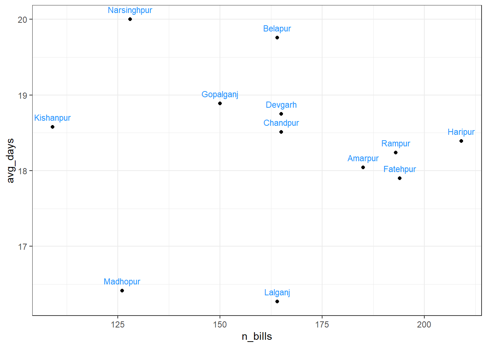
In Figure 22.31 each point has its label just above it, because of vjust = -1. But some labels overlap. A very useful package, ggrepel, places such labels so that they do not overlap. See Figure 22.32.
# Load package
library(ggrepel)
# Allow any number of overlaps to be resolved
options(ggrepel.max.overlaps = Inf)
ggplot(dist_summary, aes(x = n_bills, y = avg_days)) +
geom_point() +
geom_text_repel(aes(label = district),
size = 3,
colour = "seagreen",
fontface = "bold.italic")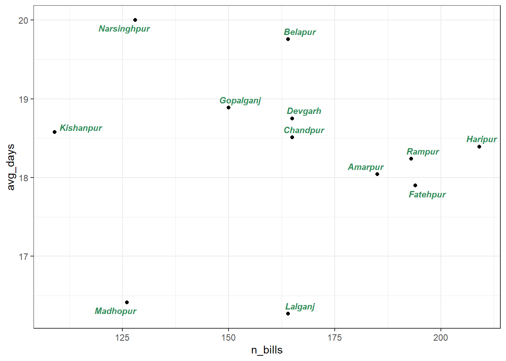
Labelling bars drawn by geom_bar() from raw data is a little tricky. The label must use the same stat as the bar, and the value it computed. See the example in Figure 22.33, which labels the number of bills in each category.
# Labelling a bar plot
ggplot(bills, aes(category)) +
geom_bar() +
geom_text(
aes(
y = after_stat(count + 20), # shift the label slightly above the bar
label = after_stat(count)
),
stat = "count"
)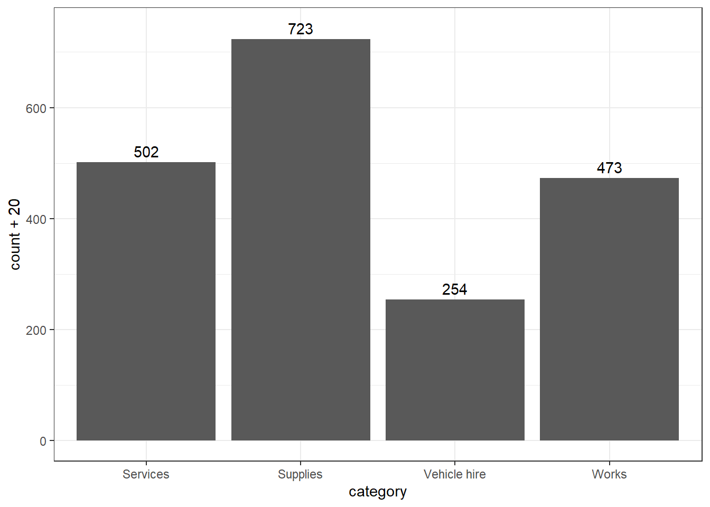
To label the chart in Figure 22.22, we must give geom_text() the same stat and summary function as the bar. Here we show the average amount in lakh, so we divide the computed y by 1e5. See Figure 22.34.
One more example labels each box of a box plot with its upper whisker, that is, the largest amount that is not treated as an outlier. Here stage() tells ggplot2 to use amount for the box, and the computed xmax for the position of the label.
# Labelling the upper whisker of a boxplot,
# inspired by June Choe
ggplot(bills, aes(amount, category)) +
geom_boxplot(outlier.shape = NA) +
geom_label(
aes(
label = after_stat(round(xmax / 1e5, 1)),
x = stage(amount, after_stat = xmax)
),
stat = "boxplot", hjust = -0.2
)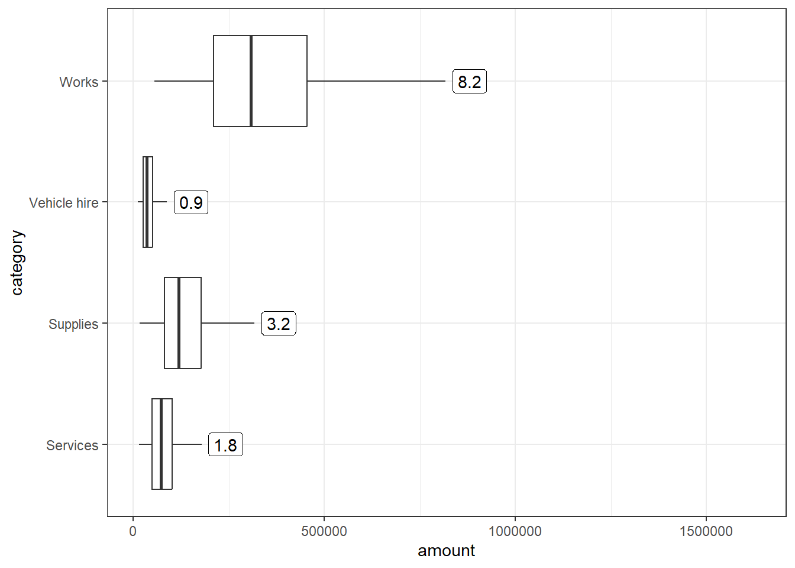
Labelling stacked bars needs one more step. The labels too must be stacked, with the same position as the bars. See the example in Figure 22.36.
ggplot(bills, aes(division, fill = category)) +
geom_bar() +
geom_text(
aes(label = after_stat(count)),
stat = "count",
position = position_stack(vjust = 0.5)
)It is easier to draw the same chart (Figure 22.36) with geom_col() on summarised data. In Figure 22.37 we count the bills ourselves with count(). We then only have to place the labels, with position_stack().
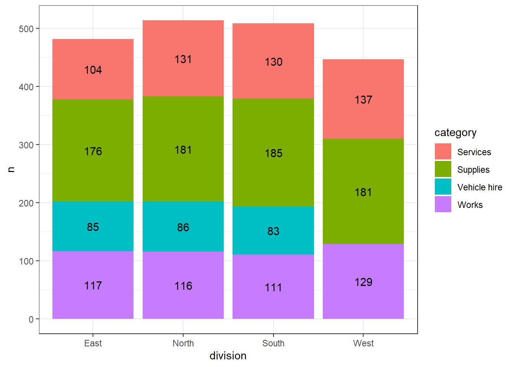
22.5.7 Line charts
Most geoms in ggplot2 have intuitive names. So we may correctly guess that line charts are drawn with geom_line(). But geom_line() is different from the geoms we have seen so far. It draws one line through many rows of data, so it must know which rows belong to the same line. It is therefore called a collective geom.
To understand this, let us take the monthly expenditure of two districts, Amarpur and Fatehpur, in lakh. month_no numbers the months of the financial year, from 1 for April to 12 for March. Let us plot the expenditure against the month.
# A tibble: 24 × 4
district month exp_lakh month_no
<chr> <fct> <dbl> <int>
1 Amarpur Apr 15.3 1
2 Fatehpur Apr 32.4 1
3 Amarpur May 19.6 2
4 Fatehpur May 15.7 2
5 Amarpur Jun 33.3 3
6 Fatehpur Jun 24.8 3
7 Amarpur Jul 27.2 4
8 Fatehpur Jul 20.9 4
9 Amarpur Aug 25.5 5
10 Fatehpur Aug 11.0 5
# ℹ 14 more rows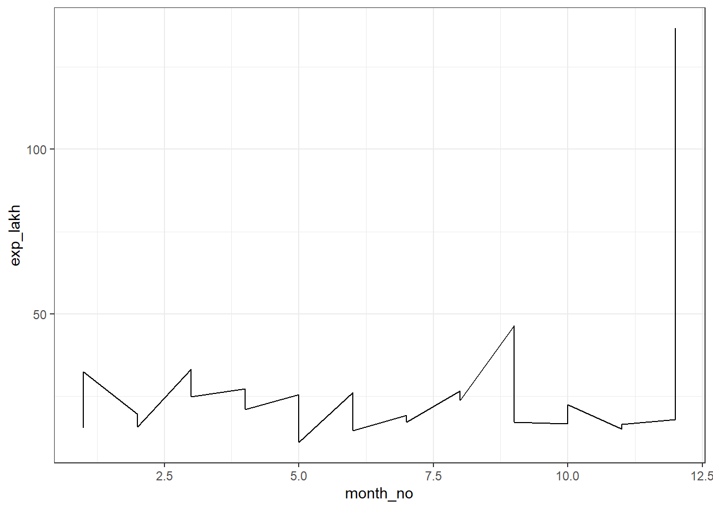
Figure 22.43 is not what we wanted. For each month, the line first joins the two districts, and then moves to the next month. We get a zigzag. This is fixed with the aesthetic group. The group aesthetic tells ggplot2 which rows are to be joined into one line. See Figure 22.44.
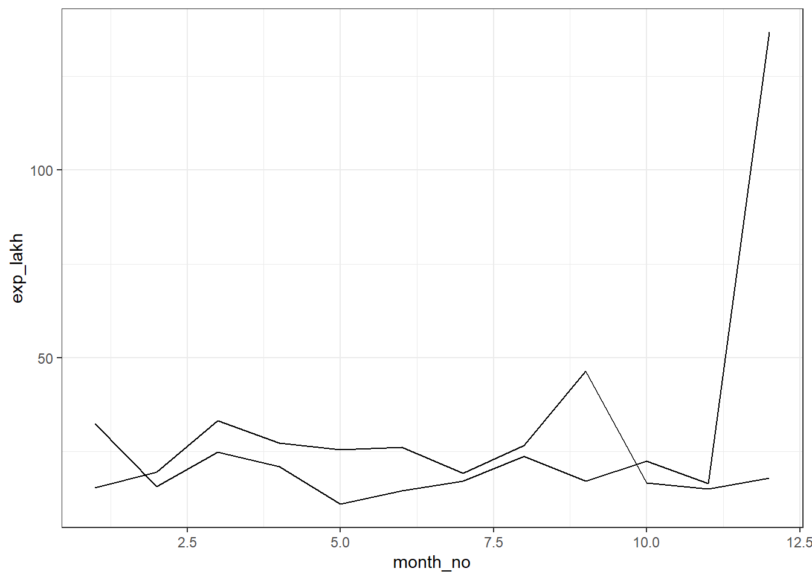
In Figure 22.44 we now have one line for each district. But we cannot tell which line is which, as there is no legend. If we map colour to the district instead, we get both separate lines and a legend. Mapping colour also forms the groups, so group is then not needed. See Figure 22.45.
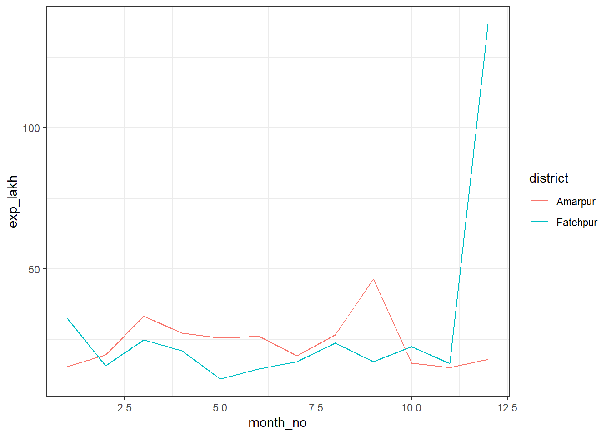
Figure 22.45 shows the March rush in Fatehpur clearly. Its line runs close to Amarpur’s for eleven months, and then shoots up in March.
Sometimes a line is defined not by one variable, but by a combination of several. Then we may use interaction() to combine them. Let us draw one line for each district and category in the monthly statement. That is 12 districts times 4 categories, less the categories some districts do not have. In Figure 22.46 each combination gets its own line.
ggplot(spend, aes(month, exp / 1e5, group = interaction(district, category))) +
geom_line()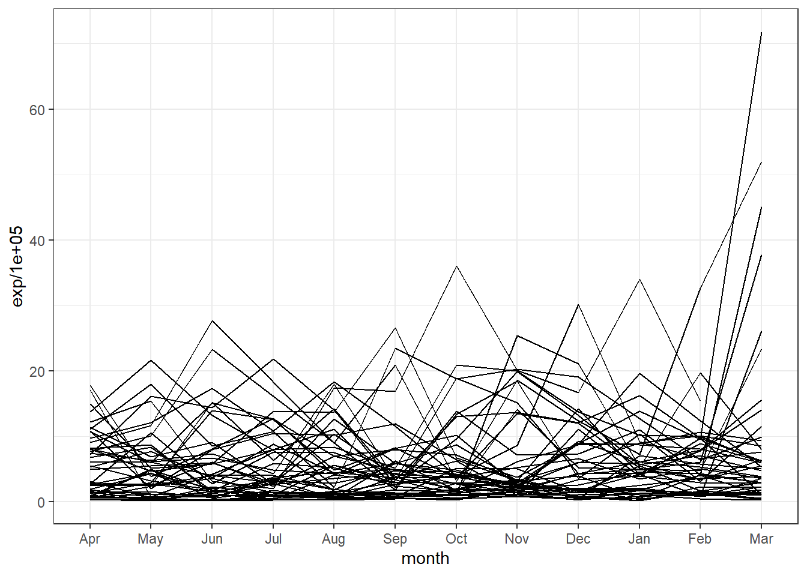
Most lines in Figure 22.46 stay low and flat. A few shoot up in March. These again belong to Fatehpur and Rampur.
A related geom, geom_path(), also draws lines. geom_line() joins the points from left to right, in the order of x. geom_path() joins them in the order in which they appear in the data. In Figure 22.47 we sort the months of Amarpur by the expenditure, to show the difference. geom_line() ignores the sorting, but geom_path() follows it, and jumps back and forth.
Both geoms also understand the aesthetic linetype. It can be mapped to a categorical variable, or given a fixed value such as "solid" (the default), "dotted", "dashed" or "dotdash".
amarpur <- two_dist |>
filter(district == "Amarpur")
amarpur |>
# Rearranging the data points
arrange(exp_lakh) |>
ggplot(aes(month_no, exp_lakh)) +
geom_line(linetype = "dotdash", linewidth = 2) +
ggtitle("Using line geom")
amarpur |>
# Rearranging the data points
arrange(exp_lakh) |>
ggplot(aes(month_no, exp_lakh)) +
geom_path(linetype = "dotted", linewidth = 2) +
ggtitle("Using path geom")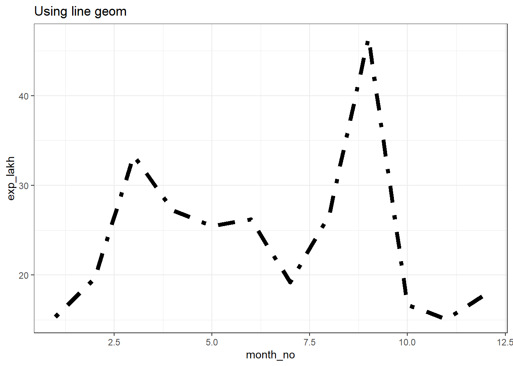
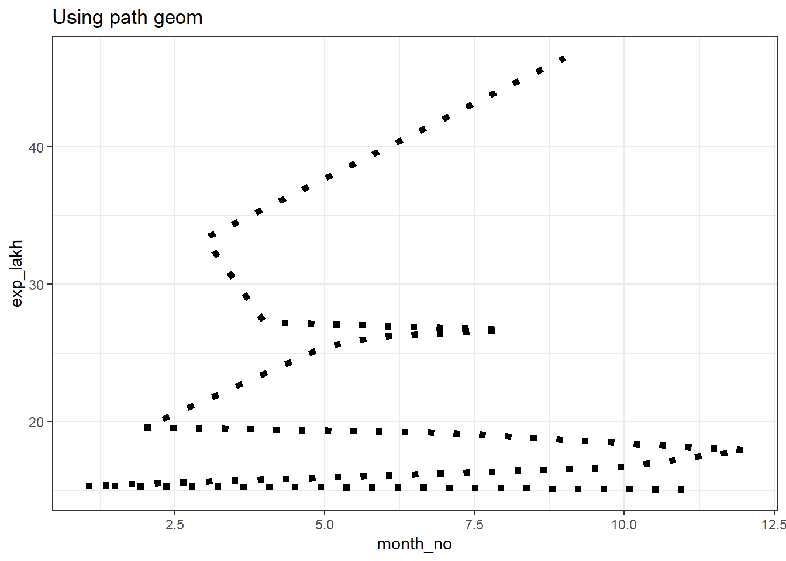
22.5.8 Smoothing through geom_smooth()
geom_smooth() adds a trend line over a scatter plot or a line chart. For example, let us draw the total monthly expenditure of the whole scheme, in crore. We add geom_smooth() to see the smoothed trend over the year. See Figure 22.48.
`geom_smooth()` using method = 'loess' and formula = 'y ~ x'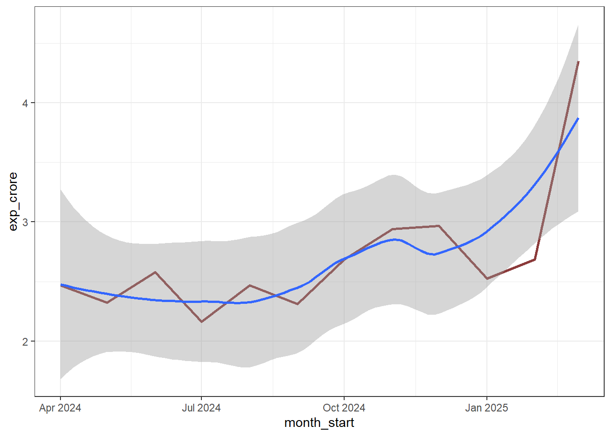
A message tells us that the method used to smooth the curve is loess, the default for small data. The other methods are lm, glm and gam. Giving the method and the formula ourselves avoids the message. The grey band around the trend shows its uncertainty. Notice how the trend line bends upwards at the end, pulled by the March rush.
We may also smooth a scatter plot, to see a straight (linear) regression line. In the monthly statement, more vouchers should mean more expenditure. Let us plot the expenditure against the number of vouchers, for every district, month and category. See Figure 22.49.
ggplot(spend, aes(vouchers, exp / 1e5)) +
geom_point() +
geom_smooth(method = "lm", formula = y ~ x)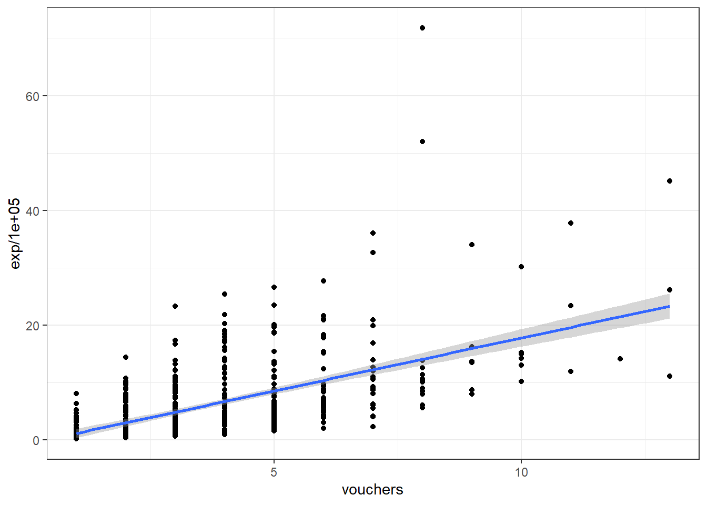
Readers may note that in Figure 22.49 we see far fewer points than the 518 rows of spend. The number of vouchers is a whole number, so many points sit exactly on the same vertical lines and hide one another. This overlap can be reduced with alpha, or by jittering. geom_jitter() moves each point by a small random amount, so that overlapping points come apart. Here we jitter only sideways, with width = 0.3 and height = 0, so that the amounts stay exact. See Figure 22.50.
ggplot(spend, aes(vouchers, exp / 1e5)) +
geom_jitter(width = 0.3, height = 0) +
geom_smooth(method = "lm", formula = y ~ x)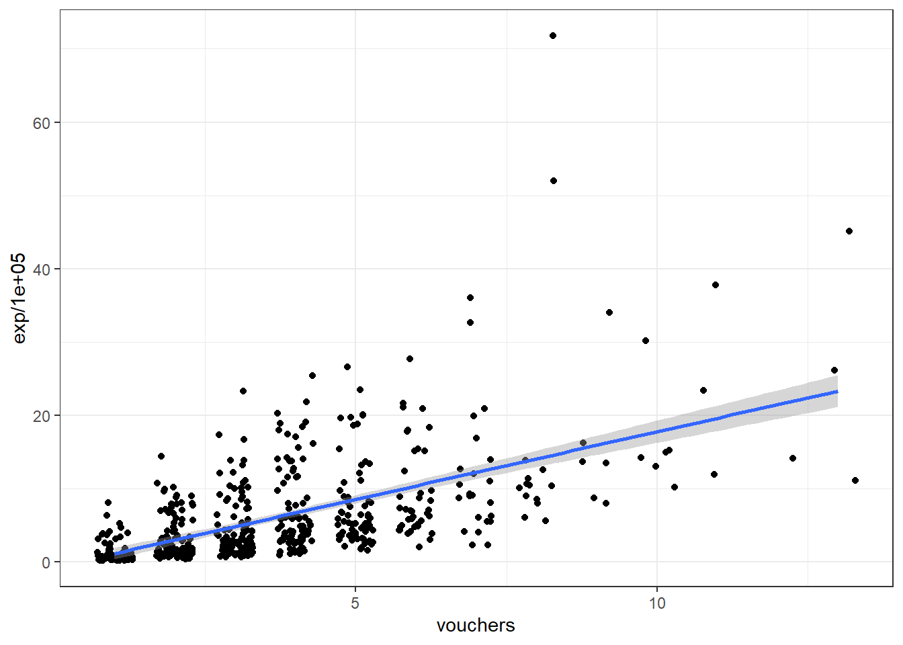
In Figure 22.50 a few points sit far above the line. They spent much more than their number of vouchers would suggest. These are again the March bills of Fatehpur and Rampur, which were both more and bigger.
WarningCaution
geom_jitter() moves the points by a random amount. That is fine for seeing where points are crowded. But never read exact values from a jittered axis, and never jitter an axis whose exact value matters to the finding. Above, we jittered only the number of vouchers, and kept the amounts exact.
22.5.9 Combining multiple geoms
We have already used more than one geom in a chart, while labelling and while smoothing. Each geom adds a new layer over the layers before it. As an example, let us add points to the line of Amarpur.
ggplot(amarpur, aes(month_no, exp_lakh)) +
# layer with line
geom_line(linewidth = 1, colour = "dodgerblue") +
# layer with points
geom_point(shape = 21, size = 7, fill = "orange", stroke = 2)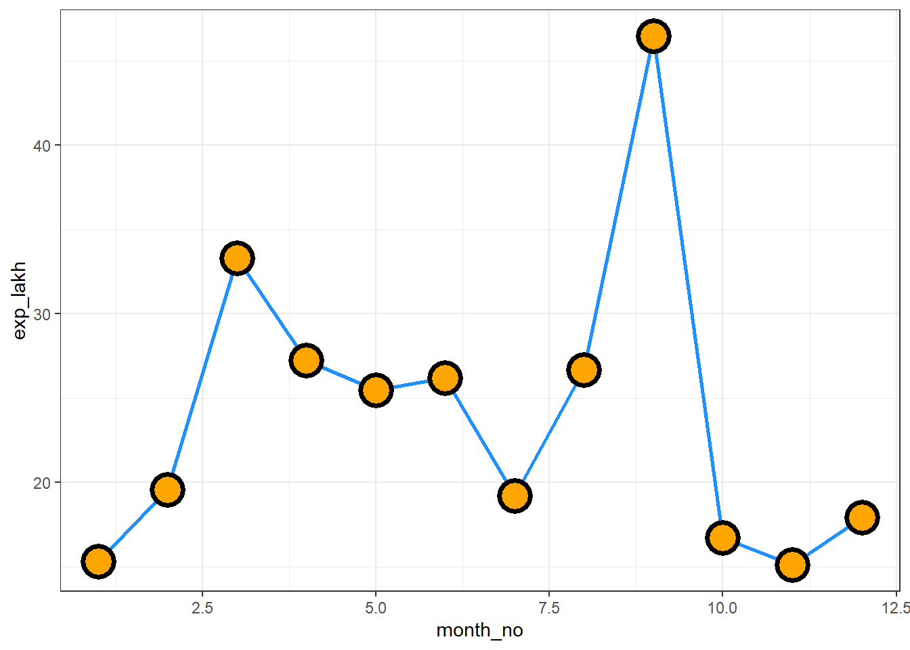
In Figure 22.51 the points are drawn over the line. If we reverse the order, the line, now the later layer, is drawn over the points. See Figure 22.52.
ggplot(amarpur, aes(month_no, exp_lakh)) +
# layer with points
geom_point(shape = 21, size = 7, fill = "orange", stroke = 2) +
# layer with line
geom_line(linewidth = 1, colour = "dodgerblue")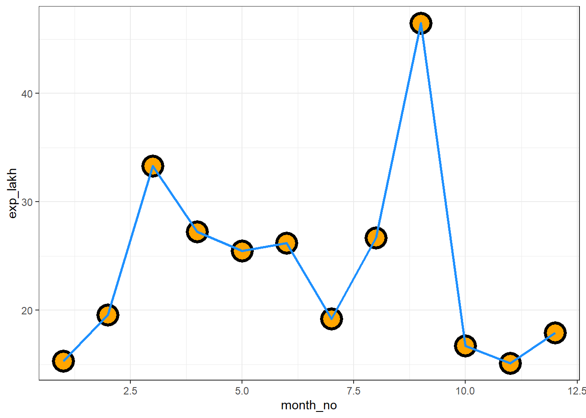
22.5.10 Other geoms
Several other geoms add useful information to the charts above.
-
geom_vline(),geom_hline()andgeom_abline()add vertical, horizontal and sloping reference lines. -
geom_rect()draws a fixed rectangle, given its four cornersxmin,ymin,xmaxandymax. -
geom_area()draws an area chart, which is a line chart filled down to thexaxis. Several groups are stacked on top of each other.
Reference lines are very useful in audit. They show the limit, the norm or the budget against which the data should be judged. In the first chart of Figure 22.53, a vertical line marks the ₹2 lakh limit, and a horizontal line marks three days. In the second chart, each point is a district, with its budget on the x axis and its expenditure on the y axis. The line drawn by geom_abline() has an intercept of 0 and a slope of 1. On this line, expenditure equals budget.
ggplot(bills, aes(amount, days_to_pay)) +
geom_point(alpha = 0.3) +
geom_vline(xintercept = 2e5, colour = "orange") +
geom_hline(yintercept = 3, colour = "dodgerblue", linetype = "dashed")
budget_vs_exp <- spend |>
summarise(amt_exp = sum(exp), .by = district) |>
left_join(budget, by = "district")
ggplot(budget_vs_exp, aes(amt_be, amt_exp)) +
geom_point(size = 3) +
geom_abline(intercept = 0, slope = 1, colour = "dodgerblue")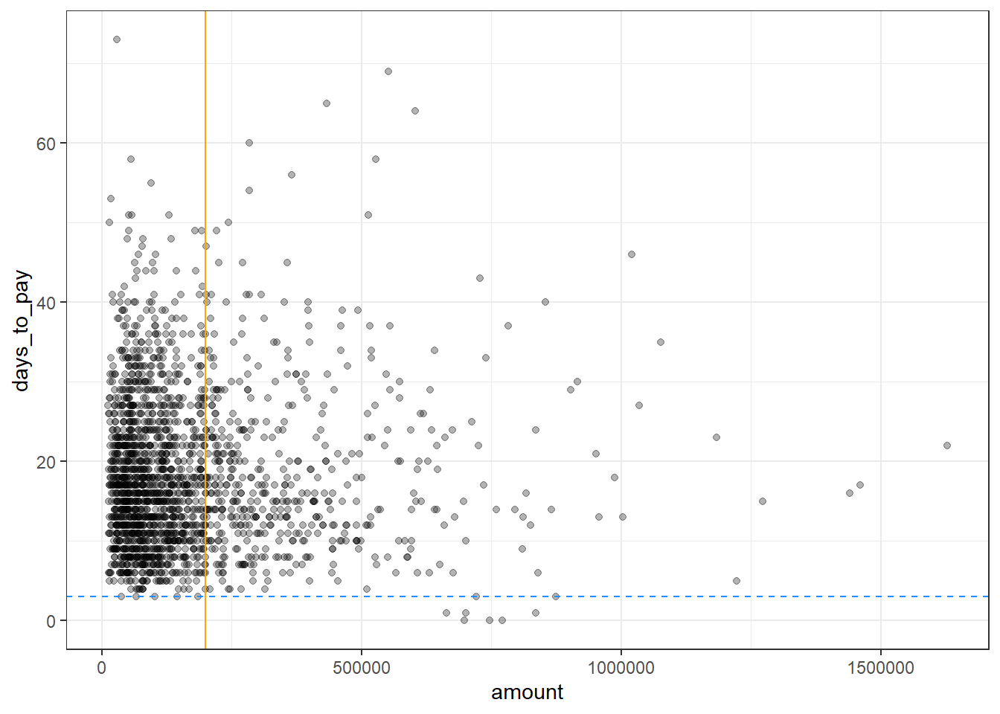
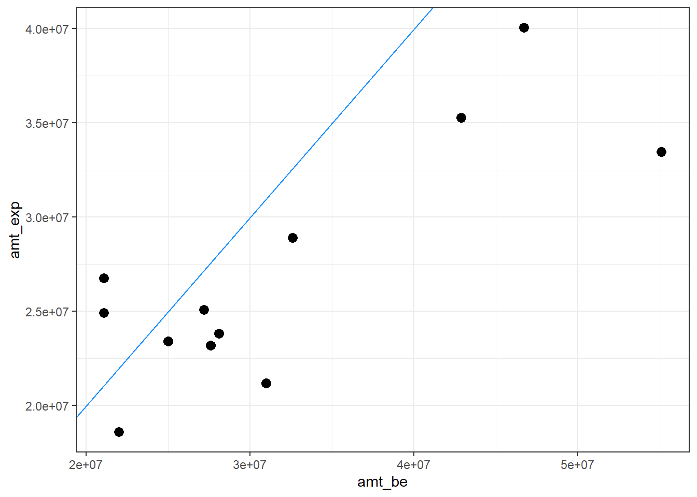
The first chart shows our third planted case. Normally, no bill is paid within three days. Yet 6 points lie below the dashed line, in the lower right corner. They are large bills, between ₹6.6 lakh and ₹8.4 lakh, paid within a day. A simple filter lists them.
# A tibble: 6 × 6
bill_no district vendor bill_date amount days_to_pay
<chr> <chr> <chr> <date> <dbl> <dbl>
1 B-0800 Lalganj Vikas Constructions 2024-09-05 746390 0
2 B-0820 Lalganj Vikas Constructions 2024-09-09 836140 1
3 B-1000 Lalganj Vikas Constructions 2024-10-12 771460 0
4 B-1212 Lalganj Vikas Constructions 2024-11-21 700300 1
5 B-1255 Lalganj Vikas Constructions 2024-11-27 663940 1
6 B-1352 Lalganj Vikas Constructions 2024-12-13 697900 0All 6 are works bills of Lalganj, paid to Vikas Constructions. In the second chart, 2 points lie above the line. These districts spent more than their budget, our fourth planted case. We return to them in Section 23.7.
TipAudit tip
Very fast payment of large bills is a red flag. Proper checks of measurement, quality and sanction take time. Ask the district why these bills were paid within a day, and check whether the work was measured and certified before payment.
22.5.11 List of geoms available in ggplot2
There are many more geoms in ggplot2 than we have discussed. Some of them appear in later chapters, where they are needed. Readers may explore the others to chart new territory.
The geoms available in the version of ggplot2 used to build this book are listed in Table 22.1.
| Entry | Title |
|---|---|
| geom_abline | Reference lines: horizontal, vertical, and diagonal |
| geom_hline | Reference lines: horizontal, vertical, and diagonal |
| geom_vline | Reference lines: horizontal, vertical, and diagonal |
| geom_bar | Bar charts |
| geom_col | Bar charts |
| geom_bin_2d | Heatmap of 2d bin counts |
| geom_bin2d | Heatmap of 2d bin counts |
| geom_blank | Draw nothing |
| geom_boxplot | A box and whiskers plot (in the style of Tukey) |
| geom_contour | 2D contours of a 3D surface |
| geom_contour_filled | 2D contours of a 3D surface |
| geom_count | Count overlapping points |
| geom_density | Smoothed density estimates |
| geom_density_2d | Contours of a 2D density estimate |
| geom_density2d | Contours of a 2D density estimate |
| geom_density_2d_filled | Contours of a 2D density estimate |
| geom_density2d_filled | Contours of a 2D density estimate |
| geom_dotplot | Dot plot |
| geom_function | Draw a function as a continuous curve |
| geom_hex | Hexagonal heatmap of 2d bin counts |
| geom_freqpoly | Histograms and frequency polygons |
| geom_histogram | Histograms and frequency polygons |
| geom_jitter | Jittered points |
| geom_crossbar | Vertical intervals: lines, crossbars & errorbars |
| geom_errorbar | Vertical intervals: lines, crossbars & errorbars |
| geom_errorbarh | Vertical intervals: lines, crossbars & errorbars |
| geom_linerange | Vertical intervals: lines, crossbars & errorbars |
| geom_pointrange | Vertical intervals: lines, crossbars & errorbars |
| geom_map | Polygons from a reference map |
| geom_path | Connect observations |
| geom_line | Connect observations |
| geom_step | Connect observations |
| geom_point | Points |
| geom_polygon | Polygons |
| geom_qq_line | A quantile-quantile plot |
| geom_qq | A quantile-quantile plot |
| geom_quantile | Quantile regression |
| geom_ribbon | Ribbons and area plots |
| geom_area | Ribbons and area plots |
| geom_rug | Rug plots in the margins |
| geom_segment | Line segments and curves |
| geom_curve | Line segments and curves |
| geom_smooth | Smoothed conditional means |
| geom_spoke | Line segments parameterised by location, direction and distance |
| geom_label | Text |
| geom_text | Text |
| geom_raster | Rectangles |
| geom_rect | Rectangles |
| geom_tile | Rectangles |
| geom_violin | Violin plot |
| get_geom_defaults | Resolve and get geom defaults |
| geom_sf | Visualise sf objects |
| geom_sf_label | Visualise sf objects |
| geom_sf_text | Visualise sf objects |
| update_geom_defaults | Modify geom/stat aesthetic defaults for future plots |
| reset_geom_defaults | Modify geom/stat aesthetic defaults for future plots |
22.6 Audit use case, the March rush
The heat-map in Figure 22.11 first showed us a March rush in Fatehpur and Rampur. The line charts in Figure 22.45 and Figure 22.46 showed it again. Let us now put a number on it. For each district, we find the share of March in the expenditure of the year, and draw it as a bar.
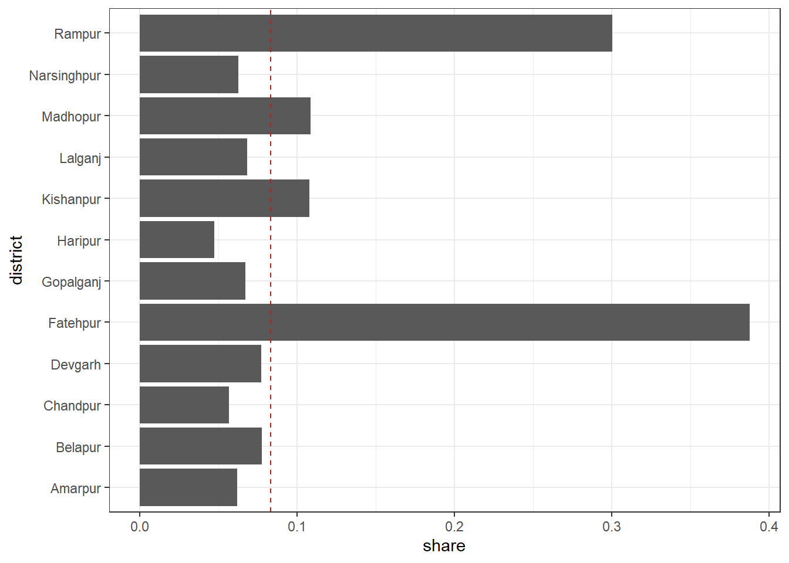
In an even year, each month would carry one-twelfth of the expenditure, about 8%. The dashed line in Figure 22.54 marks that share. Most bars end near it. Fatehpur spent 39% of its expenditure of the year in March, and Rampur spent 30%.
What should the auditor do next?
- List the March bills of these two districts, and compare them with their bills of other months.
- Check the date of supply, the date of work and the stock entries for each March bill.
- Check whether the money was spent only to avoid a lapse of funds at the end of the year.
- Record the charts, the list of bills and the replies of the districts in the working papers.
22.7 A suggested workflow
- Decide the one point first. Before writing any code, decide what the chart should tell the reader, such as which districts spent more than their budget. Then choose the geom that suits it. Use bars to compare amounts, lines for trends over months, a heat-map for districts against months, and a histogram or box plot for the spread of bills.
-
Summarise the data yourself. Aggregate the bill register by district, month or category first, and draw the bars with
geom_col(). This is easier to check than a summary done insidegeom_bar(). -
Map variables with care. Put a variable inside
aes()only when it should change the look of the chart. Give fixed colours outsideaes(). Convert numeric codes, like district codes or quarter numbers, withas.factor()before mapping them to colour or shape. - Look for the unusual. Use a histogram with a bin ending at the limit to find bills just below it. Use a heat-map to find a month or a district that stands apart. Use reference lines to find points beyond the norm.
-
Add the reference. Draw the budget, the limit, the norm or the average as a line with
geom_vline(),geom_hline()orgeom_abline(). The reader can then judge each bar or point against it. - Then polish the chart. Format the numbers, add labels and a theme, and save the chart, as shown in Chapter 23.
ImportantRemember
A chart should make one point clearly. Map a variable inside aes() only when it should change the look of the chart, and give fixed colours outside it. Always show the reference, such as the limit or the budget, against which the reader should judge. A pattern in a chart is a lead, not a finding. Confirm it from the records before reporting it.
22.8 Where next
Our charts so far find the patterns, but they are not yet ready for a report. In Chapter 23 we learn to control the axes and colours, split a chart into facets, add titles and notes, set a theme and save the chart. We also examine the bills split just below the limit, and draw a chart for the audit report.
22.9 Summary of functions used
| Function | Package | What it does |
|---|---|---|
ggplot(), aes()
|
ggplot2 | Start a plot with data, and map variables to aesthetics |
layer() |
ggplot2 | Add a layer with its geom, stat and position spelt out |
geom_point(), geom_jitter()
|
ggplot2 | Scatter plots, with or without random jitter |
geom_line(), geom_path(), geom_smooth()
|
ggplot2 | Lines, paths in data order, and trend lines |
geom_bar(), geom_col()
|
ggplot2 | Bars from counts or summaries, or from values as they are |
geom_histogram(), geom_freqpoly()
|
ggplot2 | Distributions, as bars or lines (binwidth, bins, boundary) |
geom_boxplot(), geom_tile()
|
ggplot2 | Box plots and heat-maps |
geom_text(), geom_label(), geom_text_repel()
|
ggplot2, ggrepel | Labels on a plot |
geom_vline(), geom_hline(), geom_abline()
|
ggplot2 | Reference lines |
geom_rect(), geom_area()
|
ggplot2 | Rectangles and area charts |
after_stat(), stage()
|
ggplot2 | Use values computed by a stat, such as count
|
interaction() |
base R | Combine two variables into one group |
position_stack(), position_dodge(), position_dodge2(), position_fill()
|
ggplot2 | Stacked, side by side, and 100% stacked bars |
ggtitle() |
ggplot2 | A title for a chart |
theme_set(), theme_bw()
|
ggplot2 | Set a default look for all later charts |
Hadley Wickham et al., Ggplot2: Create Elegant Data Visualisations Using the Grammar of Graphics, 2026, https://ggplot2.tidyverse.org.↩︎
Hadley Wickham, “A Layered Grammar of Graphics,” Journal of Computational and Graphical Statistics 19, no. 1 (2010): 3–28, https://doi.org/10.1198/jcgs.2009.07098.↩︎
Version 3.3.0 was released in March 2020, and version 4.0.0, with a rewritten internal structure and many new features, in September 2025. This book uses version 4.↩︎
Adapted from Hadley Wickham’s paper on the layered grammar of graphics↩︎